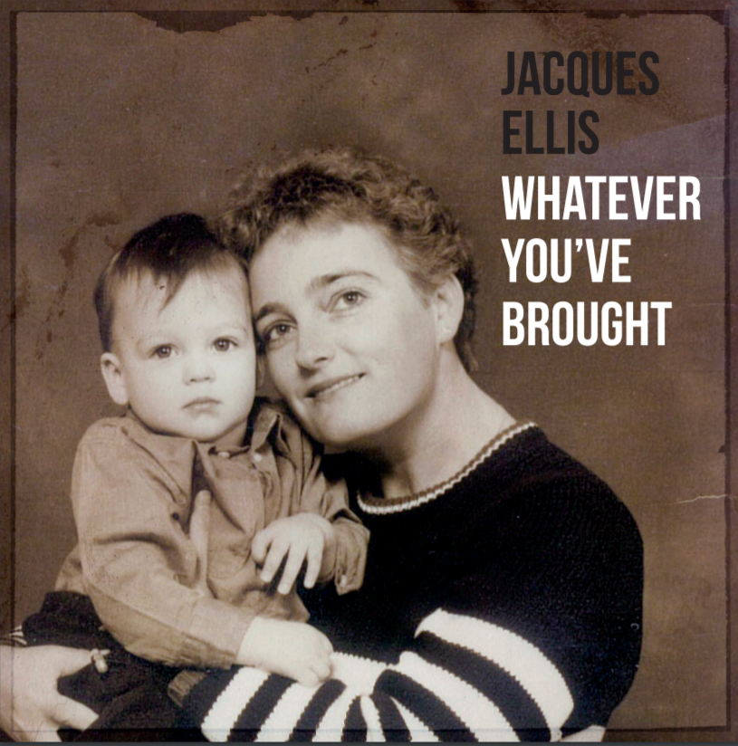

About

Jacques Ellis (born as David van den Berg) is a Dutch singer-songwriter. Writing about his mourning process after the loss of his mother at the age of ten, Jacques found a way to create new music as a way of escapism and personal clarity.
Upcoming Single
Click Here to pre-save my debut single 'Swimming' releasing November 14th!
Live Video
Social media
Follow me on social media


Upcoming Album
Check out my upcoming album 'Whatever you've brought' releasing in 2021
Upcoming Perfomances
Unfortunately as of now there are no performances planned, but be sure to check up on my social media to see when a new performance gets announced!